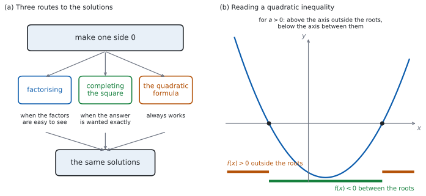

SL 2.7a — Solving quadratic equations and inequalities（2 次方程式と 2 次不等式）
- \(2\) 次方程式を、因数分解・平方完成・解の公式の \(3\) つの方法で解ける。
- 問題文の指示から、どの方法を使うかを選べる。
- 積の形の方程式は、右辺を \(0\) にしてからでないと \(A = 0\) または \(B = 0\) と分けられない、と分かる（\(AB = 2\) からは何も言えない）。
- 解を exact value（正確な値）で書ける。
- \(2\) 次不等式を解ける。
- 不等式の答えを、正しい書き方で書ける。
The idea
1. 解く道すじは \(3\) つ
\(2\) 次方程式とは、\(ax^{2}+bx+c = 0\)（\(a \neq 0\)）の形に直せる方程式のことです。
まず、右辺を \(0\) にします。 そこから先は、\(3\) つの道すじがあります。

図 1 の (a) が、そのようすです。どの道すじでも、出てくる解は同じです。ちがうのは、手間と、答えの見た目です。
root と zero と solution は、同じ数を指します
シラバスにこう書かれています。
Solutions may be referred to as roots of equations or zeros of functions.
\(x^{2}-9x+20 = 0\) の roots は \(4\) と \(5\)、\(f(x) = x^{2}-9x+20\) の zeros も \(4\) と \(5\) です（SL 2.4）。どの言い方でも、答える数は同じです。
2. 因数分解で解く
\[ AB = 0 \quad \Longrightarrow \quad A = 0 \ \text{または} \ B = 0 \tag{1}\]
\(2\) つの数をかけて \(0\) になるのは、少なくとも一方が \(0\) のときです。これを zero product property（積が \(0\) の性質）と言います。
\(x^{2}-9x+20 = 0\) なら、
\[ (x-4)(x-5) = 0 \ \Rightarrow \ x - 4 = 0 \ \text{または} \ x - 5 = 0 \]
\[ x = 4 \quad \text{または} \quad x = 5 \]
\((x-4)(x-5) = 2\) から「\(x-4 = 2\) または \(x-5 = 2\)」とはできません。かけて \(2\) になる \(2\) 数の組み合わせは、いくらでもあるからです。
必ず、すべてを左辺に集めて \(= 0\) の形にしてから因数分解してください。
\(5x^{2} = 15x\) の両辺を \(x\) で割ると \(5x = 15\)、つまり \(x = 3\) だけになります。\(x = 0\) という解が消えてしまいます。
\(x\) で割れるのは \(x \neq 0\) のときだけです。割らずに、左辺に集めて共通因数をくくり出してください。
\[ 5x^{2} - 15x = 0 \ \Rightarrow \ 5x(x-3) = 0 \ \Rightarrow \ x = 0 \ \text{または} \ x = 3 \]
3. 平方完成で解く
SL 2.6 の平方完成を使うと、根号を使った正確な値が出ます。
\(x^{2}+4x-1 = 0\) で見ます。\(x\) の係数 \(4\) の半分は \(2\) です。
\[ (x+2)^{2} - 4 - 1 = 0 \ \Rightarrow \ (x+2)^{2} = 5 \]
両辺の平方根をとります。このとき \(\pm\) が要ります。
\[ x + 2 = \pm\sqrt{5} \ \Rightarrow \ x = -2 \pm \sqrt{5} \]
\((x+2)^{2} = 5\) を満たすのは、\(x+2 = \sqrt{5}\) だけではありません。\(x+2 = -\sqrt{5}\) でも、\(2\) 乗すれば \(5\) になります。
\(2\) 乗して \(5\) になる数は \(2\) つあるので、解も \(2\) つです。
4. 解の公式
\[ x = \frac{-b \pm \sqrt{b^{2}-4ac}}{2a} \tag{2}\]
公式集の 2.7 の欄に Solutions of a quadratic equation として印刷されています。
\(ax^{2} + bx + c = 0 \Rightarrow x = \dfrac{-b \pm \sqrt{b^{2}-4ac}}{2a}\), \(a \neq 0\)
\(a \neq 0\) も、公式集に書かれています。 \(a = 0\) なら分母が \(0\) になり、そもそも \(2\) 次方程式ではありません。
\(2x^{2}+3x-4 = 0\) なら、\(a = 2\)、\(b = 3\)、\(c = -4\) です。
\[ x = \frac{-3 \pm \sqrt{9 - 4(2)(-4)}}{2(2)} = \frac{-3 \pm \sqrt{9+32}}{4} = \frac{-3 \pm \sqrt{41}}{4} \]
\(a\) と \(c\) の符号がちがうので、\(-4ac\) は正になります（ここでは \(a = 2 > 0\)、\(c = -4 < 0\)）。\(a\) と \(c\) が同符号なら、\(-4ac\) は負です。
\(\dfrac{-b}{2a} \pm \sqrt{b^{2}-4ac}\) ではありません。分子は \(-b \pm \sqrt{\ldots}\) のひとかたまりです。
書くときは、分数の線を長く引いて、\(-b\) と根号の両方が上にあることが見えるようにしてください。
5. どの方法を選ぶか
| 問題文の言い方 | 使う方法 |
|---|---|
| 何も指定がなく、因数が見つかる | 因数分解 |
in the form \(p \pm \sqrt{q}\) |
平方完成 |
giving your answer in the form \(\dfrac{p \pm \sqrt{q}}{r}\) |
解の公式 |
Hence の前に平方完成をさせている |
その結果を使う |
| 因数が見つからない | 解の公式 |
因数分解は、うまくいけばいちばん速い方法です。\(1\) 分ほど探して見つからなければ、公式に切りかえてください。
6. \(2\) 次不等式
\(2\) 次不等式は、\(3\) 段階で解きます。
- すべてを片側に集めて、右辺を \(0\) にする。
- 等号（\(= 0\)）とおいて解く（\(x\) 切片を求める）。
- グラフの形から、どちらの側かを決める。
以下では、\(x\) 切片が \(2\) つある場合を扱います（\(1\) つのとき・\(0\) のときは SL 2.7b で扱います）。
\(x^{2}-2x-3 > 0\) で見ます。
段階 1。 右辺はすでに \(0\) です。
段階 2。 \(x^{2}-2x-3 = 0\) から \((x-3)(x+1) = 0\) なので、\(x = 3\) と \(x = -1\) です。
段階 3。 \(a = 1 > 0\) なので下に凸です。図 1 の (b) のとおり、グラフが \(x\) 軸より上にあるのは、\(2\) つの \(x\) 切片の外側です。
\[ x < -1 \quad \text{または} \quad x > 3 \]
\(3\) つの区間から \(1\) つずつ、計算しやすい数を選びます。
- \(x = -2\)：\(4+4-3 = 5 > 0\) ✓（外側は成り立つ）
- \(x = 0\)：\(0-0-3 = -3\)（内側は成り立たない）
- \(x = 4\)：\(16-8-3 = 5 > 0\) ✓（外側は成り立つ）
グラフをかかなくても、これで決まります。
7. 不等式の答えの書き方
| 場合 | 書き方 |
|---|---|
| 外側（\(2\) つの区間） | \(x < -1\) または \(x > 3\) |
| 内側（\(1\) つの区間） | \(-1 < x < 3\) |
\(-1 < x < 3\) のような書き方が使えるのは、\(1\) つのつながった区間のときだけです。表 2 の \(2\) 行を見くらべてください。
外側の答えは離れた \(2\) つの区間なので、\(1\) つの不等式にまとめられません。or で結んで、\(2\) つ書いてください。
英語で書くときは x < -1 or x > 3 です。and にすると「両方を同時に満たす」という意味になり、そのような \(x\) はありません。
\(\le\) と \(<\) の区別にも気をつけてください。\(x^{2}-2x-3 \ge 0\) なら、\(x\) 切片も答えに入るので \(x \le -1\) または \(x \ge 3\) です。
TI-Nspire CX II に solve( はありません。menu → Algebra → Polynomial Tools → Find Roots of Polynomial を使うと、次数と係数を入れて \(2\) つの解が小数で返ります。
このサイトは TI-Nspire CX II を前提にしています。 ほかの機種を使う場合、試験に持ちこめるかどうかは学校の DP コーディネーターに確認してください。IB は、承認された電卓の一覧を Programme Resource Centre (PRC) の calculator の項に置いています（学校からアクセスします）。ここに書いていない機種の可否は、推測しないでください。
不等式は、式のままでは解けません。 Graphs 画面に \(y = f(x)\) をかき、menu → Analyze Graph → Zero で \(x\) 切片を出してから、グラフが \(x\) 軸より上か下かを見て区間を決めてください。
Paper 1 では使えません。 このページの例題と演習は、すべて手で解ける形にしてあります。解の公式は、公式集を見ながら手で使えるようにしておいてください。
Show that と書かれている設問では、電卓で答えだけ出しても、求められていることをしたことになりません。
Why it works
なぜ、\(AB = 0\) から「\(A = 0\) または \(B = 0\)」が言えるのでしょうか。
\(A \neq 0\) だとします。すると両辺を \(A\) で割れて、\(B = 0\) が出ます。つまり、\(A\) が \(0\) でないなら \(B\) が \(0\) です。\(A\) が \(0\) の場合も合わせると、「少なくとも一方が \(0\)」になります。
これは \(0\) だから言えることです。 \(AB = 6\) なら、\(A = 2, B = 3\) でも \(A = 12, B = \frac{1}{2}\) でも成り立ち、どちらの数も \(0\) ではありません。\(AB = 0\) になる \(2\) 数の組み合わせも無数にありますが、そのどれもが「少なくとも一方は \(0\)」を満たします。 ここだけが \(0\) の特別なところで、\(6\) や \(2\) にはこの性質がありません。
なぜ、解の公式が出るのでしょうか。
SL 2.6 で見たとおり、平方完成すると
\[ ax^{2}+bx+c = a\left(x + \frac{b}{2a}\right)^{2} - \frac{b^{2}}{4a} + c \]
です。これを \(0\) とおいて、\(\left(x + \dfrac{b}{2a}\right)^{2}\) について解きます。
\[ a\left(x + \frac{b}{2a}\right)^{2} = \frac{b^{2}}{4a} - c = \frac{b^{2}-4ac}{4a} \]
\[ \left(x + \frac{b}{2a}\right)^{2} = \frac{b^{2}-4ac}{4a^{2}} \]
右辺が \(0\) 以上のとき、つまり \(b^{2}-4ac \ge 0\) のとき、両辺の平方根をとれます（\(\pm\) が要ります）。\(\sqrt{4a^{2}} = \lvert 2a \rvert\) ですが、\(\pm\) が付いているので \(2a\) と書いても出てくる \(2\) つの値は同じです。
（\(b^{2}-4ac < 0\) のときは平方根がとれません。その場合に何が起きるかは SL 2.7b で見ます。）
\[ x + \frac{b}{2a} = \frac{\pm\sqrt{b^{2}-4ac}}{2a} \]
\[ x = \frac{-b \pm \sqrt{b^{2}-4ac}}{2a} \]
解の公式は、平方完成を一般の \(a\)、\(b\)、\(c\) でやっただけです。だから \(2\) つは必ず同じ答えを出します。
なぜ、\(a > 0\) の不等式では「外側」が正なのでしょうか。 \(f(x) = a(x-p)(x-q)\) と書けるとき（\(p < q\)）、
- \(x > q\) なら、\(x-p\) も \(x-q\) も正。積は正。
- \(p < x < q\) なら、\(x-p\) は正、\(x-q\) は負。積は負。
- \(x < p\) なら、\(x-p\) も \(x-q\) も負。積は正。
\(a > 0\) なら、これがそのまま \(f(x)\) の符号です。\(a < 0\) なら、すべて逆になります。
Worked examples
問題文は英語です。意味が理解できなかったら、問題文の下の「日本語訳」を開いてください。解説は日本語です。
例題も演習も、すべて電卓なしで解けます。 Paper 1 のつもりで解いてください。
例題 1 (a) Solve \(x^{2} - 7x + 12 = 0\).
(b) Solve \(2x^{2} = 8x\).
(c) Explain why dividing both sides of \(2x^{2} = 8x\) by \(x\) does not give all the solutions.
(d) Solve \(3x^{2} - 12 = 0\).
日本語訳
(a) \(x^{2}-7x+12 = 0\) を解きなさい。
(b) \(2x^{2} = 8x\) を解きなさい。
(c) \(2x^{2} = 8x\) の両辺を \(x\) で割ると、すべての解が得られない理由を説明しなさい。
(d) \(3x^{2}-12 = 0\) を解きなさい。
(a) かけて \(12\)、足して \(-7\) になる \(2\) 数は \(-3\) と \(-4\) です。
\[ (x-3)(x-4) = 0 \]
\[ x = 3 \quad \text{または} \quad x = 4 \]
(b) 右辺を \(0\) にしてから、共通因数をくくり出します（第 2 節）。
\[ 2x^{2} - 8x = 0 \ \Rightarrow \ 2x(x-4) = 0 \]
\[ x = 0 \quad \text{または} \quad x = 4 \]
(c) Explain why なので、英語で理由を書きます。
試験ではこう書く
Dividing both sides by \(x\) is only allowed when \(x \neq 0\), because division by zero is not defined. The value \(x = 0\) does satisfy the original equation, since \(2(0)^{2} = 0 = 8(0)\), but it is removed by the division, which leaves only \(2x = 8\) and so \(x = 4\). Bringing everything to one side and factorising as \(2x(x-4) = 0\) keeps both solutions.
（両辺を \(x\) で割ってよいのは \(x \neq 0\) のときだけである。\(0\) で割ることは定義されないからである。\(x = 0\) はもとの方程式を満たす（\(2(0)^{2} = 0 = 8(0)\)）が、割り算によって取り除かれてしまい、\(2x = 8\)、つまり \(x = 4\) だけが残る。すべてを片側に集めて \(2x(x-4) = 0\) と因数分解すれば、\(2\) つの解が両方とも残る、という意味です。）
(d) \(x\) の項がないので、そのまま解けます。
\[ 3x^{2} = 12 \ \Rightarrow \ x^{2} = 4 \ \Rightarrow \ x = \pm 2 \]
検算（(a) について）。 出した \(2\) 数を、もとの式に入れ直します。
\[ 3^{2}-7(3)+12 = 9-21+12 = 0, \qquad 4^{2}-7(4)+12 = 16-28+12 = 0 \]
どちらも \(0\) ✓ 因数分解した式ではなく、もとの式に入れるのが要です。
検算（(b) について）。 もとの形（両辺のある式）に入れます。 \(x = 0\) では左辺 \(0\)、右辺 \(0\) ✓ \(x = 4\) では左辺 \(2(16) = 32\)、右辺 \(8(4) = 32\) ✓
検算（(d) について）。 \(x = 2\) で \(3(4)-12 = 0\) ✓ \(x = -2\) でも \(3(4)-12 = 0\) ✓ \(\pm\) を落としていないかは、負のほうを入れて確かめられます。
(a) \((x-3)(x-4) = 0\) \[x = 3 \quad \text{or} \quad x = 4\]
(b) \(2x^{2}-8x = 0\), \(2x(x-4) = 0\) \[x = 0 \quad \text{or} \quad x = 4\]
(c) Dividing by \(x\) requires \(x \neq 0\), so the solution \(x = 0\) is lost. Factorising \(2x(x-4) = 0\) keeps both.
(d) \(x^{2} = 4\) \[x = \pm 2\]
例題 2 The function \(f\) is defined by \(f(x) = x^{2} + 6x - 2\).
(a) Write \(f(x)\) in the form \((x+h)^{2} + k\).
(b) Hence solve \(f(x) = 0\), giving your answers in the form \(p \pm \sqrt{q}\).
(c) Write down the coordinates of the vertex of the graph of \(y = f(x)\).
(d) Find the sum of the two solutions found in part (b).
日本語訳
関数 \(f\) は \(f(x) = x^{2}+6x-2\) で定められています。
(a) \(f(x)\) を \((x+h)^{2}+k\) の形で書きなさい。
(b) それを使って \(f(x) = 0\) を解き、答えを \(p \pm \sqrt{q}\) の形で書きなさい。
(c) \(y = f(x)\) のグラフの頂点の座標を書きなさい。
(d) (b) で求めた \(2\) つの解の和を求めなさい。
(a) \(x\) の係数 \(6\) の半分は \(3\) です（第 3 節）。
\[ x^{2}+6x-2 = (x+3)^{2} - 9 - 2 = (x+3)^{2} - 11 \]
(b) Hence なので、(a) の形を使います。
\[ (x+3)^{2} - 11 = 0 \ \Rightarrow \ (x+3)^{2} = 11 \]
\[ x + 3 = \pm\sqrt{11} \ \Rightarrow \ x = -3 \pm \sqrt{11} \]
(c) vertex form から読めます（SL 2.6）。\((x+h)^{2}+k\) の頂点は \((-h,\ k)\) です。ここでは \(h = 3\)、\(k = -11\) なので、\(x\) 座標は \(-3\) になります。
\[ (-3, \ -11) \]
(d) \(2\) つの解は \(-3+\sqrt{11}\) と \(-3-\sqrt{11}\) です。足すと \(\sqrt{11}\) が消えます。
\[ (-3+\sqrt{11}) + (-3-\sqrt{11}) = -6 \]
検算（(a) について）。 展開して、もとの式に戻るかを見ます。 \((x+3)^{2}-11 = x^{2}+6x+9-11 = x^{2}+6x-2\) ✓
検算（(b) について）。 解の公式でも出します。 \(a = 1\)、\(b = 6\)、\(c = -2\) なので
\[ x = \frac{-6 \pm \sqrt{36+8}}{2} = \frac{-6 \pm \sqrt{44}}{2} = \frac{-6 \pm 2\sqrt{11}}{2} = -3 \pm \sqrt{11} \]
一致しました ✓ ちがう \(2\) つの方法で、同じ答えが出ました。
検算（(d) について）。 足す前に、\(2\) 解が本当に解かを確かめます。 \(x = -3+\sqrt{11}\) のとき \((-3+\sqrt{11})^{2} = 9-6\sqrt{11}+11 = 20-6\sqrt{11}\)、\(6x = -18+6\sqrt{11}\) なので、\(f(x) = 20-6\sqrt{11}-18+6\sqrt{11}-2 = 0\) ✓ \(-\) のほうも \(\sqrt{11}\) の符号が変わるだけで \(0\) です。\(2\) 解が正しいと分かってから足しています。
\(\pm\) を落として \(x = -3+\sqrt{11}\) だけにしていたら、(d) の和が出せません。解は \(2\) つあります。
(a) \[f(x) = (x+3)^{2} - 11\]
(b) \((x+3)^{2} = 11\), \(x+3 = \pm\sqrt{11}\) \[x = -3 \pm \sqrt{11}\]
(c) \[(-3, \ -11)\]
(d) \[(-3+\sqrt{11}) + (-3-\sqrt{11}) = -6\]
例題 3 Consider the equation \(2x^{2} + 5x - 1 = 0\).
(a) Write down the values of \(a\), \(b\) and \(c\).
(b) Solve the equation, giving your answers in the form \(\dfrac{p \pm \sqrt{q}}{r}\).
(c) Show that the two solutions differ by \(\dfrac{\sqrt{33}}{2}\).
(d) Explain why the quadratic formula cannot be used when \(a = 0\).
日本語訳
方程式 \(2x^{2}+5x-1 = 0\) を考えます。
(a) \(a\)、\(b\)、\(c\) の値を書きなさい。
(b) この方程式を解き、答えを \(\dfrac{p \pm \sqrt{q}}{r}\) の形で書きなさい。
(c) \(2\) つの解の差が \(\dfrac{\sqrt{33}}{2}\) であることを示しなさい。
(d) \(a = 0\) のとき解の公式が使えない理由を説明しなさい。
(a) \(x^{2}\) の係数、\(x\) の係数、定数項です。
\[ a = 2, \qquad b = 5, \qquad c = -1 \]
(b) 式 2 に入れます。\(a\) と \(c\) の符号がちがうので、\(-4ac\) は正になります。
\[ x = \frac{-5 \pm \sqrt{5^{2} - 4(2)(-1)}}{2(2)} = \frac{-5 \pm \sqrt{25+8}}{4} = \frac{-5 \pm \sqrt{33}}{4} \]
(c) Show that なので、引き算を書いて見せます。
\[ \frac{-5+\sqrt{33}}{4} - \frac{-5-\sqrt{33}}{4} = \frac{2\sqrt{33}}{4} = \frac{\sqrt{33}}{2} \]
(d) Explain why なので、英語で理由を書きます。
試験ではこう書く
If \(a = 0\) the denominator \(2a\) is zero, and division by zero is not defined, so the formula gives no value. When \(a = 0\) the equation is \(bx + c = 0\), which is linear rather than quadratic, so a formula that produces two solutions cannot apply. This is why the formula booklet states the condition \(a \neq 0\).
（\(a = 0\) なら分母 \(2a\) が \(0\) になり、\(0\) で割ることは定義されないので、公式は値を返さない。\(a = 0\) のとき方程式は \(bx+c = 0\) で、\(2\) 次ではなく \(1\) 次だから、\(2\) つの解を出す公式は当てはまらない。公式集に \(a \neq 0\) と書かれているのは、このためである、という意味です。）
検算（(b) について）。 出した解を、もとの式に入れ直します。 \(x = \dfrac{-5+\sqrt{33}}{4}\) のとき
\[ x^{2} = \frac{25 - 10\sqrt{33} + 33}{16} = \frac{29 - 5\sqrt{33}}{8} \]
なので \(2x^{2} = \dfrac{29 - 5\sqrt{33}}{4}\)、\(5x = \dfrac{-25 + 5\sqrt{33}}{4}\) です。足すと
\[ 2x^{2} + 5x - 1 = \frac{29 - 5\sqrt{33} - 25 + 5\sqrt{33}}{4} - 1 = \frac{4}{4} - 1 = 0 \]
✓ \(\sqrt{33}\) がちょうど消えるのが、合っている印です。 \(-\) のほうは \(\sqrt{33}\) の符号が変わるだけなので、同じ計算で \(0\) になります。
検算（(c) について）。 解の公式を使わない道でも出します。 平方完成すると
\[ 2x^{2}+5x-1 = 2\left(x+\frac{5}{4}\right)^{2} - \frac{25}{8} - 1 = 2\left(x+\frac{5}{4}\right)^{2} - \frac{33}{8} \]
です。\(0\) とおくと \(\left(x+\dfrac{5}{4}\right)^{2} = \dfrac{33}{16}\) なので、\(2\) 解は \(x = -\dfrac{5}{4}\) から左右に \(\dfrac{\sqrt{33}}{4}\) ずつ離れています。差はその \(2\) 倍で \(\dfrac{\sqrt{33}}{2}\) ✓ 公式を通らずに同じ差が出ました。
(a) \[a = 2, \quad b = 5, \quad c = -1\]
(b) \(x = \dfrac{-5 \pm \sqrt{25+8}}{4}\) \[x = \frac{-5 \pm \sqrt{33}}{4}\]
(c) \[\frac{-5+\sqrt{33}}{4} - \frac{-5-\sqrt{33}}{4} = \frac{2\sqrt{33}}{4} = \frac{\sqrt{33}}{2}\]
(d) If \(a = 0\) the denominator \(2a\) is zero, so the formula is not defined; the equation is then linear, not quadratic.
例題 4 Consider the function \(f(x) = x^{2} - x - 6\).
(a) Solve \(f(x) = 0\).
(b) Hence solve the inequality \(f(x) > 0\).
(c) Write down the solution of \(f(x) \le 0\).
(d) A student writes the answer to part (b) as \(3 < x < -2\). Comment on this answer.
日本語訳
関数 \(f(x) = x^{2}-x-6\) を考えます。
(a) \(f(x) = 0\) を解きなさい。
(b) それを使って、不等式 \(f(x) > 0\) を解きなさい。
(c) \(f(x) \le 0\) の解を書きなさい。
(d) ある生徒が (b) の答えを \(3 < x < -2\) と書きました。この答えについて述べなさい。
(a) かけて \(-6\)、足して \(-1\) になる \(2\) 数は \(-3\) と \(2\) です。
\[ (x-3)(x+2) = 0 \ \Rightarrow \ x = 3 \ \text{または} \ x = -2 \]
(b) \(a = 1 > 0\) なので下に凸です。\(x\) 軸より上にあるのは、\(2\) つの \(x\) 切片の外側です（第 6 節）。
\[ x < -2 \quad \text{または} \quad x > 3 \]
(c) \(\le\) なので、\(x\) 切片も入ります。今度は内側です。
\[ -2 \le x \le 3 \]
(d) Comment on なので、英語で判断とその理由を書きます。
試験ではこう書く
The answer is not correct as written. A chain such as \(3 < x < -2\) means both \(x > 3\) and \(x < -2\) at the same time, and no number satisfies both, so it describes the empty set. The solution set here is two separate intervals, which cannot be written as one chain: it must be given as \(x < -2\) or \(x > 3\). The word “or” is essential, since a single value of \(x\) lies in only one of the two intervals.
（この答えは、書かれたままでは正しくない。\(3 < x < -2\) のような書き方は「\(x > 3\) かつ \(x < -2\)」を意味するが、その両方を満たす数はないので、空集合を表すことになる。ここでの解集合は離れた \(2\) つの区間であり、\(1\) つの連なりには書けない。\(x < -2\) または \(x > 3\) と書かなければならない。\(1\) つの \(x\) はどちらか一方の区間にしか入らないので、or が欠かせない、という意味です。）
検算（(a) について）。 もとの式に入れ直します。\(f(3) = 9-3-6 = 0\) ✓ \(f(-2) = 4+2-6 = 0\) ✓ 境目の数がここで確かめられたので、あとの検算はその外側・内側だけを見ればよくなります。
検算（(b) について）。 \(3\) つの区間から \(1\) つずつ数を入れます。 \(x = -3\)：\(9+3-6 = 6 > 0\) ✓ \(x = 0\)：\(-6\) で、成り立ちません ✓ \(x = 4\)：\(16-4-6 = 6 > 0\) ✓ 外側の \(2\) 区間だけが成り立ちました。
検算（(c) について）。 (b) と合わせて、すべての実数がちょうど \(1\) 回ずつ現れるかを見ます。 (b) は \(x < -2\) と \(x > 3\)、(c) は \(-2 \le x \le 3\) です。合わせると実数全体になり、重なりもありません ✓ ただしこの見方は、境目の数そのものが正しいかは見ていません（それは (a) の検算の役目です）。\(>\) の答えと \(\le\) の答えは、境目をどちらが取るかだけがちがいます。
(a) \((x-3)(x+2) = 0\) \[x = 3 \quad \text{or} \quad x = -2\]
(b) \[x < -2 \quad \text{or} \quad x > 3\]
(c) \[-2 \le x \le 3\]
(d) Not correct: \(3 < x < -2\) means \(x > 3\) and \(x < -2\) at once, which is impossible. The two intervals must be written as \(x < -2\) or \(x > 3\).
Common errors
\(x\) で割れるのは \(x \neq 0\) のときだけです（第 2 節）。
共通因数としてくくり出せば、\(x = 0\) も残ります。
\((x+h)^{2} = k\)（\(k > 0\)）から出る解は \(2\) つです（第 3 節）。
\(x^{2} = 49\) の解も \(x = 7\) だけではなく、\(x = \pm 7\) です。
\(-b\) の符号（\(b\) が負なら \(-b\) は正）と、分母の \(2a\) が分子全体にかかることに気をつけてください（式 2）。
\(b^{2}-4ac\) では、\(a\) と \(c\) の符号がちがうと \(-4ac\) が正（足し算）になります。同符号なら負です。
\(x\) 切片が \(2\) つあり \(a > 0\) なら、\(f(x) > 0\) は外側、\(f(x) < 0\) は内側です（第 6 節）。
\(a < 0\) なら逆になります。迷ったら、数を \(1\) つ入れてください。
\(3 < x < -2\) のようには書けません（第 7 節）。or で結んで \(2\) つ書きます。
つながった \(1\) 区間のときだけ、\(-2 < x < 3\) の形が使えます。
Exercises
各問題に、折りたたみが \(3\) つ付いています。日本語訳、解答例（答案用紙に書くべきこと。英語です）、解説（なぜそうなるか。日本語です）。
まず自分で解いて、次に解答例と見くらべてください。解説は、合わなかったときだけ開けば十分です。
1 Solve \(x^{2} + 5x + 6 = 0\).
日本語訳
\(x^{2}+5x+6 = 0\) を解きなさい。
\[(x+2)(x+3) = 0\]
\[x = -2 \quad \text{or} \quad x = -3\]
かけて \(6\)、足して \(5\) になる \(2\) 数は \(2\) と \(3\) です。どちらも正なので、かっこの中は \(+\) です。
検算。 出した \(2\) 数を、もとの式に入れ直します。\(4-10+6 = 0\) ✓ \(9-15+6 = 0\) ✓
符号の見当も付きます。 実数解をもつ場合、定数項が正なら \(2\) 解の符号は同じで、\(x\) の係数も正ならどちらも負のはずです ✓ （実数解があるかどうかは、これでは分かりません。）
2 Solve \(x^{2} = 9x\).
日本語訳
\(x^{2} = 9x\) を解きなさい。
\[x^{2} - 9x = 0\]
\[x(x-9) = 0\]
\[x = 0 \quad \text{or} \quad x = 9\]
\(x\) で割らないでください（第 2 節）。右辺を \(0\) にしてから、共通因数をくくり出します。
検算。 もとの形（両辺のある式）に入れます。 \(x = 0\) では左辺 \(0\)、右辺 \(0\) ✓ \(x = 9\) では左辺 \(81\)、右辺 \(81\) ✓
\(x = 9\) だけ答えていたら、\(x\) で割って \(x = 0\) を落としています。\(2\) 次方程式の実数解は多くても \(2\) つです。\(1\) つ見つけたら、もう \(1\) つがないかを必ず確かめてください。
3 Solve \(2x^{2} - 18 = 0\).
日本語訳
\(2x^{2} - 18 = 0\) を解きなさい。
\[2x^{2} = 18, \qquad x^{2} = 9\]
\[x = \pm 3\]
\(x\) の項がないので、\(x^{2}\) について解いてから平方根をとります。\(\pm\) を忘れないでください（第 3 節）。
検算。 両方入れ直します。\(2(9)-18 = 0\) ✓ \(x = -3\) でも \((-3)^{2} = 9\) なので \(0\) ✓
因数分解でも出せます。 \(2(x^{2}-9) = 2(x-3)(x+3) = 0\) ✓ ちがう道すじで、同じ \(2\) 解になりました。
4 (a) Write \(x^{2} - 4x + 1\) in the form \((x-h)^{2} + k\).
(b) Hence solve \(x^{2} - 4x + 1 = 0\), giving your answers in the form \(p \pm \sqrt{q}\).
日本語訳
(a) \(x^{2}-4x+1\) を \((x-h)^{2}+k\) の形で書きなさい。
(b) それを使って \(x^{2}-4x+1 = 0\) を解き、答えを \(p \pm \sqrt{q}\) の形で書きなさい。
(a) \[x^{2}-4x+1 = (x-2)^{2} - 4 + 1 = (x-2)^{2} - 3\]
(b) \((x-2)^{2} = 3\) \[x = 2 \pm \sqrt{3}\]
\(x\) の係数 \(-4\) の半分は \(-2\) です。\((x-2)^{2} = x^{2}-4x+4\) なので、\(4\) を引きます。
検算（(a) について）。 展開して、もとの式に戻るかを見ます。\((x-2)^{2}-3 = x^{2}-4x+4-3 = x^{2}-4x+1\) ✓
検算（(b) について）。 解の公式でも出します。 \(a=1\)、\(b=-4\)、\(c=1\) なので
\[ x = \frac{4 \pm \sqrt{16-4}}{2} = \frac{4 \pm \sqrt{12}}{2} = \frac{4 \pm 2\sqrt{3}}{2} = 2 \pm \sqrt{3} \]
一致しました ✓
5 Solve \(3x^{2} + 7x + 2 = 0\) by factorising.
日本語訳
\(3x^{2}+7x+2 = 0\) を因数分解して解きなさい。
\[(3x+1)(x+2) = 0\]
\[x = -\frac{1}{3} \quad \text{or} \quad x = -2\]
\(x^{2}\) の係数が \(1\) でないので、\(3x\) と \(x\) に分けて考えます。\((3x+1)(x+2)\) を展開すると \(3x^{2}+6x+x+2 = 3x^{2}+7x+2\) です。
\(3x+1 = 0\) から \(x = -\dfrac{1}{3}\) です。分数の解を、整数に丸めないでください。
検算。 もとの式に入れ直します。\(x = -2\) では \(12-14+2 = 0\) ✓ \(x = -\dfrac{1}{3}\) では
\[ 3\left(\frac{1}{9}\right) + 7\left(-\frac{1}{3}\right) + 2 = \frac{1}{3} - \frac{7}{3} + \frac{6}{3} = 0 \]
✓ になりました。
6 Solve \(x^{2} + 3x - 5 = 0\), giving your answers in the form \(\dfrac{p \pm \sqrt{q}}{r}\).
日本語訳
\(x^{2}+3x-5 = 0\) を解き、答えを \(\dfrac{p \pm \sqrt{q}}{r}\) の形で書きなさい。
\(a = 1\), \(b = 3\), \(c = -5\)
\[x = \frac{-3 \pm \sqrt{9 + 20}}{2}\]
\[x = \frac{-3 \pm \sqrt{29}}{2}\]
答えの形が指定されているので、解の公式です（表 1）。\(c = -5\) なので \(-4ac = +20\) になります。
検算。 \(+\) のほうの解を、もとの式に入れ直します。 \(x = \dfrac{-3+\sqrt{29}}{2}\) のとき \(x^{2} = \dfrac{9-6\sqrt{29}+29}{4} = \dfrac{19-3\sqrt{29}}{2}\)、\(3x = \dfrac{-9+3\sqrt{29}}{2}\) なので、足すと \(\dfrac{19-3\sqrt{29}-9+3\sqrt{29}}{2} - 5 = 5 - 5 = 0\) ✓ \(\sqrt{29}\) が消えました。
\(\sqrt{29}\) はこれ以上簡単になりません。 \(29\) は素数なので、根号の外に出せる因数がありません。\(-3\) と \(2\) にも共通の因数がないので、分数の約分もできません。\(\dfrac{-3 \pm \sqrt{29}}{2}\) が最終形です。
7 Solve the inequality \(x^{2} - 2x - 8 < 0\).
日本語訳
不等式 \(x^{2}-2x-8 < 0\) を解きなさい。
\((x-4)(x+2) = 0\) gives \(x = 4\) and \(x = -2\)
\(a > 0\), so the graph is below the axis between the roots
\[-2 < x < 4\]
まず \(= 0\) として解き、それから向きを決めます（第 6 節）。\(a = 1 > 0\)、\(< 0\) なので内側です。
検算。 \(3\) つの区間から \(1\) つずつ入れます。 \(x = -3\)：\(9+6-8 = 7\)（成り立たない）\(x = 0\)：\(-8 < 0\) ✓ \(x = 5\)：\(25-10-8 = 7\)（成り立たない）内側だけが成り立ちました。
\(<\) なので、端は入りません。 \(x = -2\) では \(4+4-8 = 0\) で、\(< 0\) にはなりません。
8 Solve the inequality \(x^{2} \ge 16\).
日本語訳
不等式 \(x^{2} \ge 16\) を解きなさい。
\(x^{2} - 16 \ge 0\), and \((x-4)(x+4) = 0\) gives \(x = \pm 4\)
\[x \le -4 \quad \text{or} \quad x \ge 4\]
まず右辺を \(0\) にします。 \(a > 0\) で \(\ge 0\) なので、外側（端を含む）です。
検算。 \(x = -5\)：\(25 \ge 16\) ✓ \(x = 0\)：\(0 \ge 16\) は成り立たない ✓ \(x = 5\)：\(25 \ge 16\) ✓ 端の \(x = 4\) では \(16 \ge 16\) で、成り立ちます ✓
「\(x \ge 4\)」だけにしていたら、負のほうが抜けています。\(x = -5\) も \(x^{2} = 25 \ge 16\) を満たします。\(2\) 乗すると符号が消えることを思い出してください。
9 Explain why the equations \(x^{2} - 4x + 3 = 0\) and \(2x^{2} - 8x + 6 = 0\) have the same solutions.
日本語訳
方程式 \(x^{2}-4x+3 = 0\) と \(2x^{2}-8x+6 = 0\) の解が同じである理由を説明しなさい。
\(2x^{2}-8x+6 = 2(x^{2}-4x+3)\). A product is zero exactly when one factor is zero, and \(2 \neq 0\), so \(2(x^{2}-4x+3) = 0\) holds exactly when \(x^{2}-4x+3 = 0\). The two equations therefore have the same solutions.
Explain why なので、\(2\) つの式の関係を書いてから、理由を述べます。
\(2\) 番目の式は、\(1\) 番目の式を \(2\) 倍したものです。\(0\) を \(2\) 倍しても \(0\) なので、解は変わりません。
「\(0\) でない数を掛けた」ことが要です。 \(0\) を掛けたら \(0 = 0\) になり、すべての \(x\) が解になってしまいます。
検算。 どちらの式も解いて、同じ解が出るかを見ます。 \(x^{2}-4x+3 = (x-1)(x-3) = 0\) から \(x = 1, 3\)。\(2x^{2}-8x+6\) に \(x = 1\) を入れると \(2-8+6 = 0\) ✓ \(x = 3\) では \(18-24+6 = 0\) ✓
試験ではこう書く
Factorising the second expression gives \(2x^{2}-8x+6 = 2(x^{2}-4x+3)\). A product equals zero exactly when one of its factors equals zero, and the factor \(2\) is never zero, so \(2(x^{2}-4x+3) = 0\) holds exactly when \(x^{2}-4x+3 = 0\). The two equations are therefore satisfied by the same values of \(x\), namely \(x = 1\) and \(x = 3\). Multiplying an equation by a non-zero constant does not change its solutions.
10 A student is asked to solve \(x^{2} = 5x\), and writes
\[ x^{2} = 5x, \qquad x = 5 \]
Identify the error in the student’s work, and write down all the solutions.
日本語訳
ある生徒が \(x^{2} = 5x\) を解くように言われ、上のように書きました。
生徒の計算の誤りを指摘し、すべての解を書きなさい。
The student divided both sides by \(x\), which is only allowed when \(x \neq 0\), so the solution \(x = 0\) was lost.
\[x^{2} - 5x = 0, \qquad x(x-5) = 0\]
\[x = 0 \quad \text{or} \quad x = 5\]
Identify the error なので、どこが違うのかを名指ししてから、正しい答えを書きます。
生徒は両辺を \(x\) で割っています。\(x\) が \(0\) かもしれないので、それはできません（第 2 節）。
検算。 落ちた解が、本当に解であることを確かめます。 \(x = 0\) を入れると、左辺 \(0^{2} = 0\)、右辺 \(5(0) = 0\) ✓ 等しいので、\(x = 0\) は解です。
\(x = 5\) のほうは正しいことも確かめます。左辺 \(25\)、右辺 \(25\) ✓ 生徒の答えは「まちがい」ではなく「不足」です。
試験ではこう書く
The student divided both sides by \(x\). This is only valid when \(x \neq 0\), so the possible solution \(x = 0\) is lost; substituting \(x = 0\) into the original equation gives \(0 = 0\), so it is a solution. The correct method is to bring everything to one side: \(x^{2}-5x = 0\), so \(x(x-5) = 0\) and \(x = 0\) or \(x = 5\).